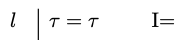
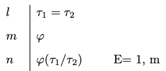

We begin with a distinction between two important binary relations: numerical and qualitative identity. The relation of numerical identity is one an object bears to itself and to nothing else, and it is generally expressed by means of the predicate ‘is’ or ‘is identical to’. Unfortunately, that predicate is sometimes used to express a different relation, one that obtains between two objects if they are similar in every respect that may be relevant for the purposes of a conversation. We use the label ‘numerical identity’ for the first relation and the label ‘qualitative identity’ for the second.
Two objects are qualitatively identical when they share all of the same qualities.
If Alex and Beth bought two computers of the same make and with the same specifications and even the same color, we may be inclined to say:
We speak of numerical identity when two objects are one and the same.
If Alex and Beth do not own different computers but rather happen to share one and the same machine, we may be inclined to say:
Unfortunately, a variety of sentences are ambiguous between two interpretations of the relevant predicates:
On the interpretation of the predicate ‘the same’ in terms of numerical identity, one and the same computer has been used throughout the years and one and the same computer had been bought by me one year ago and has been bought by you now. On the alternative interpretation in terms of qualitative identity, I have always used computers of the same make and specifications even if more than one, and the computer you bought now is of the same make and specifications as the one I had bought one year ago.
Quantificational logic with identity expands the vocabulary of quantificational logic with a predicate \(=\) for numerical identity, which is interpreted to mean: one and the same object. All formulas of quantificational logic are formulas of quantificational logic with identity, but the definition of atomic formula of the latter is now expanded:
All atomic formulas of quantificational logic remain atomic formulas of quantificational logic with identity. Furthermore, if \(\tau_1\) and \(\tau_2\) are two constants or variables, then \[ \tau_1 = \tau_2 \] is an atomic formula of quantificational logic and identity.
Example 11.1 Each of the expressions below are atomic formulas of quantificational logic with identity: \[ \begin{array}{c} x = y \\ a = x\\ a = b\\ \dots \end{array} \]
We now define what is for an expression to be a formula of quantificational logic with identity.
All other definitions carry over without incident to the language of quantificational logic with identity.
The semantics for quantificational logic with identity requires a minimal modification of the semantics for quantificational logic. We retain the definition of a model, an assignment for a model, and that of the denotation of a singular term relative to an assignment. We modify the definition of truth in a model relative to an assignment in order to accommodate atomic formulas of quantificational logic with identity.
Atomic Formulas
\(\tau_1 = \tau_2\) is true in a model \(M\) under an assignment \(\alpha\) if the denotation of \(\tau_1\) relative to \(\alpha\) is one and the same object as the denotation of \(\tau_2\) relative to \(\alpha\).
Example 11.2 \(D = \{1, 2\}\)
\(I(P) = \{1, 2\}\)
\(I(Q) = \{2\}\)
\(I(R) = \{\langle 1,
2\rangle\}\)
\(I(a) = 1\)
\(I(b) = 2\)
Let \(\alpha\) be an assignment for the model \(M\): \[ \begin{array}{cccccccccc} x & y & z & x_1 & y_1 & z_1 & \dots \\ \hline 1 & 2 & 2 & 2 & 2 & 1 & \dots \\ \end{array} \] Then:
The rest of the definition of truth in a model relative to an assignment and truth in a model carries over to quantificational logic with identity without incident. So do the definitions of logical truth, equivalence, consistency, and validity.
Example 11.3 The formula \((Pa \to Pb) \to \forall x (x = a \to x = b)\) is not a logical truth.
The model verifies the antecedent of the conditional but not the consequent.
The formula \(Pa \to Pb\) is true in the model because \(p_1\) and \(p_2\) are each in \(I(P)\).
The formula \(\forall x (x = a \to x = b)\) is not true in the model because \(x = a \to x = b\) is not true when we assign \(p_1\) to \(x\). That is because \(a\) and \(b\) denote different objects in the model.
Example 11.4 Consider the following argument:
The model below verifies the premises but falsifies the conclusion.
The formula \(\forall x (x = a \to Px)\) is true in the model because \((x = a \to Px)\) is true whatever we assign to \(x\): if we assign \(p_1\) to \(x\), then antecedent and consequent come out true, but if we assign \(p_2\) to \(x\), then the antecedent is false making the conditional true.
The formula \(a =b\) is true in the model because the denotation of \(a\) in the model is the same object as the denotation of \(b\) in the model, namely, \(p_1\).
The formula \(\forall x (Px \to x = b)\) is false in the model because \((Px \to x = b)\) is not true when we assign \(p_2\) to \(x\): \(p_2\) in in \(I(P)\), but it is not one and the same object as the denotation of \(b\).
We conclude that the argument is invalid.
We now expand the natural deduction system for quantificational logic with introduction and elimination rules for identity.
There is a simple introduction rule for identity:

Identity Introduction
You may write an identity \(\tau = \tau\) by itself on a line.
The rationale for this rule is that since as a matter of logic, all objects are self-identical, whatever \(\tau\) may be, it will likewise identical to itself.
Example 11.5 \(\forall x (x = x \to x = b) \vdash \forall x \ x = b\).

Identity Elimination
You may substitute every occurrence of \(\tau_2\) for \(\tau_1\) in a formula \(\varphi\) when both that formula and an identity \(\tau_1 = \tau_2\) occur at prior available lines of a proof
The rationale for the elimination rule is that given \(\tau_1 = \tau_2\), \(\tau_1\) is one the same object as \(\tau_2\), which means that whatever is true of one should remain true of the other.
Example 11.6 \(\forall x (\neg Rbx \to (Px \to x = b)), Rab \wedge \neg Raa, Rba \to \neg Rab \vdash \neg Pa\)
We will use identity to translate overt identity statements such as ‘Mark Twain is Samuel Clemens’, which becomes \(a = b\) relative to a translation key on which \(a\) translates ‘Mark Twain’ and \(b\) translates ‘Samuel Clemens’. That use of the word ‘is’ to express numerical identity is to be contrasted with uses of the word on which it expresses a predication, e.g., ‘Mark Twain is a writer’ which would be translated \(P^1a\) relative to a translation key on which \(a\) translates ‘Mark Twain’ and \(P\) translates ‘is a writer’.
We now look at less overt uses of identity in natural language.
Only you arrived on time
Translation key
\(P\): arrived on time
\(a\): you
Every thing is such that it arrived on time only if it is identical to you.
\(\forall x (Px \to x = a)\)
You arrived on time, but someone else did as well.
Translation key
\(P\): arrived on time
\(a\): you
You arrived on time, and some thing is such that it is not identical to you and it arrived on time.
\(Pa \wedge \exists x (\neg x = a \wedge Px)\)
Identity enables us to translate a variety of statements of number.
Some statements of number say that there is at least a certain number of objects of a certain type:
Others tell us that there are at most a certain number of such objects:
There is of course no reason to use identity to translate ‘there is at least one book’ as \(\exists x Px\) relative to a translation key on which \(P\) translates ‘book’. On the other hand, neither \(\exists x \exists y (Px \wedge Py)\) nor \(\exists x Px \wedge \exists y Py\) are adequate translations of the statement ‘there are at least two books’ relative to that translation key. For they merely state that something is a book and something is a book, which is compatible with one and the same witness for each existential generalization. We do better with the help of identity, since we are able to offer the following translations for sentences in the first group:
It is not difficult to generalize to other numbers, e.g., ‘there are at least four books’, etc. We are similarly able to offer the following translations for the sentences in the second group:
The generalization to other numbers is similarly straightforward.
We are now in a position to translate numerical statements whereby we state the existence of an exact number of objects of a certain type:
The crucial observation at this point is that each of these statements is equivalent to a conjunction of two statements we already know how to translate:
The translation of each of these conjunctions becomes:
But each of these formulas is equivalent to a more concise version:
The author of Huckleberry Finn is American
We now focus on phrases such as ‘the author of Huckleberry Finn’ or ‘instructor’, which combine the expression ‘the’ with a predicate. In quantificational logic, we treated all such expressions as designators, whose primary semantic function is to designate an object. But Bertrand Russell famously suggested that they should instead be treated as quantifier phrases. He offered the following style of paraphrase for sentences involving definite descriptions:
The instructor arrived on time.
Exactly one individual is an instructor and she arrived on time.
The author of Huckleberry Finn is American
Exactly one individual is author of Huckleberry Finn and he is American.
Given Russell’s paraphrase method, the first sentence translates as:
relative to a translation key on which \(P^1\) translates ‘instructor’ and \(Q^1\) translates ‘arrived on time’. Similarly, the second sentence now translates:
relative to a translation key on which \(a\) translates ‘Huckleberry Finn’, \(R\) translates ‘authors’ and \(P\) translates ‘American’.
For each set of formulas below, find a model we can use to justify the fact that the set is consistent. Please justify your answers.
\(\{\forall x (Px \leftrightarrow Qx), Pa, Qb, \neg a = b\}\)
Show a model
\(\{\forall x (Rax \to Rbx), \neg Raa, Rba \}\)
Show a model
For each argument below, find a model we can use to justify the fact that the argument is invalid. Please justify your answers.
\(\forall x (Px \to Qx), \neg Qa \vdash a = b \to Rab\)
Show a countermodel
\(\exists x Px, \exists x Qx \vdash \exists x \exists y \neg x = y\)
Show a countermodel
Provide a natural deduction proof to justify each of the claims below:
\(\forall x (Px \to Qx), \neg Qa, Pb \vdash a = b \to Rab\)
▶ Show solution
\(\exists x Px, \exists x Qx, \neg \exists x (Px \wedge Qx) \vdash \exists x \exists y \neg x = y\)
▶ Show solution